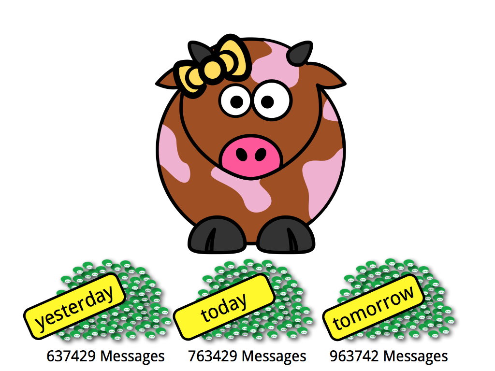
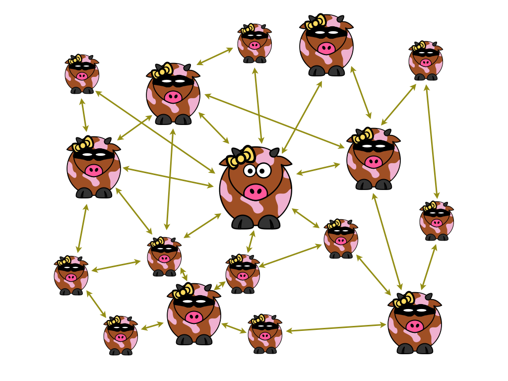

loklak
Distributed Tweet Search Server
This is the Search Server for the Loklak Webclient {{(index_sizes.messages > 0) ? " hosting " + (index_sizes.messages | number : fractionSize) + " messages for " + (index_sizes.users | number : fractionSize) + " users" : ""}}.{{(index_sizes.messages > 0 && index_sizes.mps > 0) ? "Harvesting Speed: " + index_sizes.mps + " message" + (index_sizes.mps > 1 ? "s" : "") + " per second; " + ((index_sizes.mps * 86400) | number : fractionSize) + " messages per day" : ""}}.

Collect, dump and index tweet search results.

Anonymous search API. No user accounts, no authorization.
